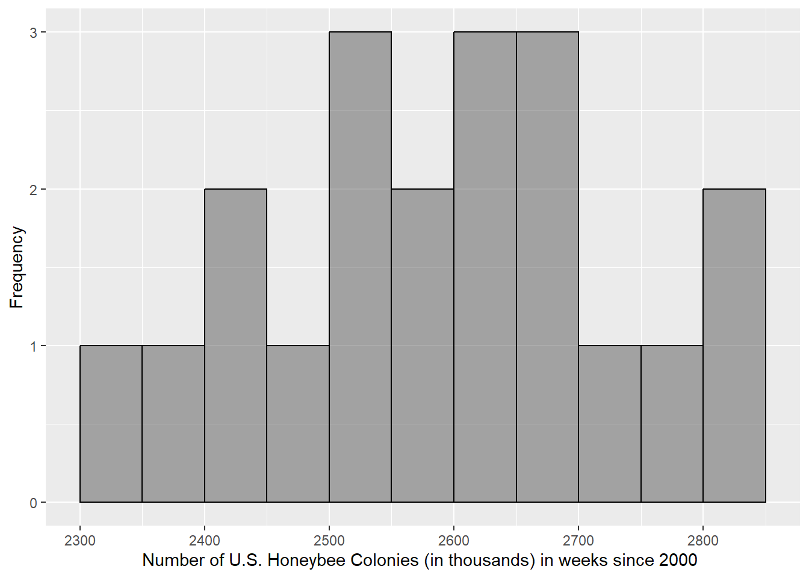

Lab 4: Estimation of a Population Mean Primer
Digital Accessibility
Please note that all images were created with modifications to the defaults to make them digitally accessible. If you recreate this code in another environment, your plots have different colors and backgrounds.
1 Getting Started
Be sure to load the packages ggformula and mosaic, using the library() function. Remember, you need to do this with each new Quarto document or R Session. Add the package names in each of the blanks below to load in the indicated packages.
library() loads in packages. You need to supply the package name you need to load inside the parentheses.
library(ggformula) #for graphs
library(mosaic) #for statistics
library(tidyverse) #for data management
library(ggformula) #for graphs
library(mosaic) #for statistics
library(tidyverse) #for data management2 Honeybee Population Decline
Many ecologists and citizens are concerned that the population of honeybees is declining. Honeybees perform an essential ecosystem service of pollinating crops in California and across the United States. Ecologists are concerned about the use of pesticides and the rise of colony collapse disorder.
The U.S. Department of Agriculture (USDA) collects information about the number of honeybee colonies in the United States. Researchers at the USDA reached out to registered apiarists (bee keepers) in each state on a week that was selected by random number generation, starting in 2000. They record the total number of honeybee colonies reported in each selected week.
The dataset honey-bee-colonies-2020.csv has the data recorded in the variable Colonies, which records the number of honeybee colonies, in thousands.
Modify the function below to read in the dataset we will use in the example and store it as the object bee.
Hint for Importing Data
Remember to use read_csv() to import the data. To hide the information it outputs about the variables and their types, add show_col_types = FALSE.
3 Study Components
Here are a few rows of the data:
| Honey Bee Colonies in the US | |
|---|---|
| Year | Colonies |
| 2006 | 2393 |
| 2005 | 2410 |
| 2007 | 2443 |
| 2012 | 2539 |
| 2003 | 2599 |
| 2013 | 2640 |
| 2008 | 2301 |
| 2009 | 2498 |
| 2010 | 2684 |
| 2019 | 2812 |
Before we work on creating and evaluating a confidence interval for these data, it is helpful to make sure we understand the data and how it is structured. Can you identify
- the case?
- the population?
- the variable of interest and its type?
- the sampling design?
Once you think you have identified the components, check your understanding below.
3.0.1 Which of the following is the variable of interest and its type in this research question?
Click Here for Hint about Variable
Click Here for Hint about Variable Type
3.0.2 Which of the following is the case in this dataset?
Click Here for Hint
3.0.3 Which of the following is the population of interest for this research question?
Click Here for Hint
3.0.4 Which of the following could be the sample for this study?
Click Here for Hint
3.0.5 What is the sampling method used by the researchers?
Click Here for Hint
3.0.6 If we were to calculate the average size of a honeybee colony in the U.S. from 50 selected colonies, that would be an example of a…
Click Here for Hint 1
Click Here for Hint 2
3.1 Single Numeric Variable Graphics
3.1.1 Histogram
To create a histogram of a single numeric variable, we use the following structure:
gf_histogram(~ x, data = mydata)where x is the name of the variable you wish to graph that is stored in the dataset named mydata.
Recall that we already loaded in our data on the prior page and named it bee. We want to graph the variable Colonies that occurs in the bee dataset.
Fill in the x blank with the name of the variable. Fill in the mydata blank with the dataset object name.
gf_histogram(~Colonies, data = bee)
gf_histogram(~Colonies, data = bee)That histogram is quite hard to read, so we can add some arguments to the basic code to help us visualize the data better. Recall you can use the following arguments:
- xlab = “___” : label the x-axis
- ylab = “___” : label the y-axis
- boundary = ## : set the number where bins begin
- color = “___” : add an outline around the bins to see them better; fill in this blank with a color name
- binwidth = ## : adjust the width of bins
Adjust the arguments in the code chunk below until your graphic looks like this:

Any multiple of the binwidth will work for the boundary entry, but 0 is the easiest to use most of the time. Your x-axis label should include the full variable, units, and the population. The y-axis could be labeled the frequency of the case, in context, if you like. In this scenario, that would be “Frequency of Weeks.” If you need to review the variables, population or case, review in the prior section.
gf_histogram(~Colonies, data = bee,
xlab = "Number of U.S. Honeybee Colonies (in thousands) in weeks since 2000 ",
ylab = "Frequency",
binwidth = 50,
boundary = 0,
color = "black")
gf_histogram(~Colonies, data = bee,
xlab = "Number of U.S. Honeybee Colonies (in thousands) in weeks since 2000 ",
ylab = "Frequency",
binwidth = 50,
boundary = 0,
color = "black")3.1.2 Boxplot
To create a boxplot of a single numeric variable, we use the following structure:
gf_boxplot(~ x, data = mydata)where x is the name of the variable you wish to graph that is stored in the dataset named mydata.
Recall that we already loaded in our data on the prior page and named it bee. We want to graph the variable Colonies that occurs in the bee dataset.
Fill in the x blank with the name of the variable. Fill in the mydata blank with the dataset object name. The function to make a boxplot is gf_boxplot.
gf_boxplot(~Colonies, data = bee)
gf_boxplot(~Colonies, data = bee)We only need a little adjustment to the boxplot because it is based on statistics. We can use the following following arguments:
- xlab = “___” : label the x-axis
- ylab = “___” : label the y-axis
3.1.3 Is there a y-axis in a single numeric variable boxplot?
Now re-create your boxplot with the appropriate axis label(s).
Since the single numeric variable is horizontal, the x-axis is the variable being graphed and should be labeled. The y-axis is meaningless and should not be. Your x-axis label should include the full variable, units, and the population. If you need to review the variables, population or case, review in the prior section.
gf_boxplot(~Colonies, data = bee,
xlab = "Number of U.S. Honeybee Colonies (in thousands) in weeks since 2000 ")
gf_boxplot(~Colonies, data = bee,
xlab = "Number of U.S. Honeybee Colonies (in thousands) in weeks since 2000 ")3.1.4 What is the shape and modality of these data?
Click Here for Hint
3.1.5 Based on the shape, the mean should be _______ the median.
3.2 Single Numeric Variable Summary Statistics
We can calculate the single numeric variable summary statistics using the following structure:
goal(~x, data = mydata)where x is the name of the numeric variable stored inside the dataframe object named mydata. goal stands in for any of the summary statistic functions we might use, such as:
meanmediansdIQRquantiledf_stats
All of these functions use the exact same structure (and the same basic structure as your graphics) for single numeric variables.
Use the code chunk below to calculate some summary statistics, such as the following:
response min Q1 median Q3 max mean sd n missing
1 Colonies 2301 2504 2616.5 2672.75 2812 2591.3 141.1066 20 03.3 Check Your Understanding
You may need to refer to the graphics or summary statistics you calculated above to answer these questions.
3.3.1 How many cases have between 2301 and 2504 thousand colonies?
Click Here for Hint 1
Click Here for Hint 2
3.3.2 What is the name for the distance between 2504 and 2672.75 thousand colonies on the boxplot?
Click Here for Hint
3.3.3 There are more cases that have values between 2301 and 2504 thousand colonies than cases that have values between 2672.75 and 2812 thousand colonies.
Click Here for Hint
3.3.4 The cases that have values between 2301 and 2504 thousand colonies are more dispersed then the cases that have values between 2672.75 and 2812 thousand colonies.
Click Here for Hint
3.3.5 We could have determined the modality of the distribution without making a histogram (i.e. with just statistics or the boxplot).
Click Here for Hint
3.4 Calculating a single numeric confidence interval using qt()
Using qt() is useful if you do not have the raw data, but instead are only given summary statistics.
To calculate a confidence interval, we can recall its equation:
\[ \bar{x} \pm t^* \cdot \frac{s}{\sqrt{n}} \]
Most of those values, namely \(\bar{x}, s, n\), can be found in our summary statistics output:
response min Q1 median Q3 max mean sd n missing
1 Colonies 2301 2504 2616.5 2672.75 2812 2591.3 141.1066 20 03.4.1 From this output identify each value appropriatly:
Since we know those values, we only need to calculate \(t^*\). The t-critical value is calculated using the function qt() using this structure:
qt(1 - alpha/2, df)The first entry, is the area to the left of our critical value, if \(1-\alpha\) is our confidence level. qt() will calculate the value of t (t-critical value) that binds that area to the left of it, given your degrees of freedom, \(df = n-1\).
If we are calculating a 95% confidence interval, then:
- the confidence level \(1-\alpha\) = 0.95, and thus
- \(\alpha\) = 0.05.
Since we know the sample size is 20, then:
- the degrees of freedom (\(df = n-1\)) is 19
Thus, our code to get the critical value is:
With this value, we can use R to calculate the confidence intervals:
2591.3 + 2.093024*(141.1066/sqrt(20))[1] 2657.342591.3 - 2.093024*(141.1066/sqrt(20))[1] 2525.26We can do the same calculation with saved objects, letting us be careful to (1) not round (as those initial outputs may be) and (2) not make a mistake typing values. All we need to do is set each part of our equation as an object value from its direct calculation. The objects xbar, s, n, and crit are made for you. Use those names together to calculate the confidence interval upper bound.
You could take the equation we solved manually and replace the values for the objects that store those value inside them.
xbar + crit * (s / sqrt(n))
xbar + crit * (s / sqrt(n))To finish our confidence interval calculations, we would run the same code but with a “-” instead of a “+” to calculate the lower bound.
3.5 Calculating a single numeric confidence interval using t.test()
If we have raw data, then we can use the t.test() function to calculate a confidence interval.
The structure of the function is as follows:
t.test(~x, data = mydata, conf.level = 1 - alpha)$conf.intwhere
xis your variable of data for which you want to calculate a confidence intervalmydatais the name of the dataframe object in R
1-alphais replaced by your confidence level, in proportions (e.g.: 0.95)
Thus, for our 95% confidence interval for our honeybee colony data (recall the variable is Colonies and the dataframe we stored it as is bee), the function would be:
The output supplies first the lower bound (2525.26), then the upper bound (2657.34) and displays your confidence level below again.
Edit the code below to calculate a 99% confidence interval.
You could take the equation we solved manually and replace the values for the objects that store those value inside them.
t.test(~Colonies, data = bee, conf.level = 0.99)$conf.int
t.test(~Colonies, data = bee, conf.level = 0.99)$conf.int